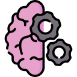
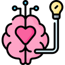
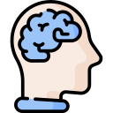
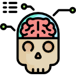

¿Qué estudia la neurociencia cognitiva?
a) La relación entre el cuerpo y la mente.
b) La relación entre la genética y la conducta.
c) La relación entre la mente, el cerebro y la cognición.
¿Cuál es la función principal de la corteza cerebral?
a) Regular el sistema nervioso autónomo.
b) Funciones cognitivas superiores como el pensamiento y la memoria.
c) Procesar emociones y sentimientos.
¿Qué método se utiliza para medir la actividad cerebral?
a) Imágenes por Resonancia Magnética Funcional
b) Resonancia magnética estructural
c) Tomografía computarizada
¿Cuál es un trastorno relacionado con disfunciones en la comunicación neuronal?

a) Trastorno bipolar.
b) Esquizofrenia.
c) Trastorno de ansiedad generalizada.
¿Qué teoría describe la capacidad del cerebro para reorganizarse?
a) Teoría de la evolución.
b) Teoría del caos.
c) Plasticidad cerebral.
¿Quién es conocido por sus investigaciones sobre la lateralización cerebral y hemisferios cerebrales?

a) Sigmund Freud.
b) Michael Gazzaniga.
c) Ivan Pavlov.
¿Qué método de neuroimagen registra la actividad eléctrica del cerebro?
a) Electroencefalografía
b) Resonancia magnética funcional
c) Tomografía por emisión de positrones
¿Cuál de las siguientes no es una función de la corteza cerebral?

a) Procesamiento sensorial.
b) Controlar los movimientos musculares.
c) Regular el sistema endocrino.